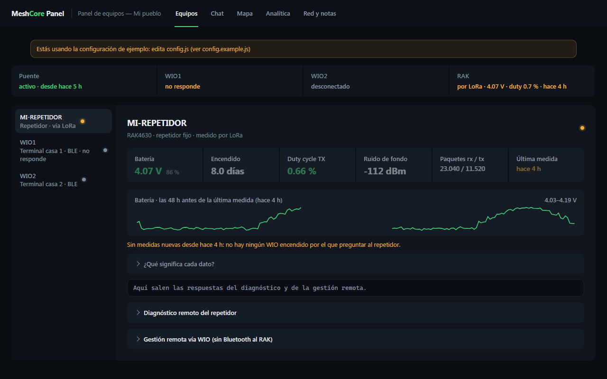
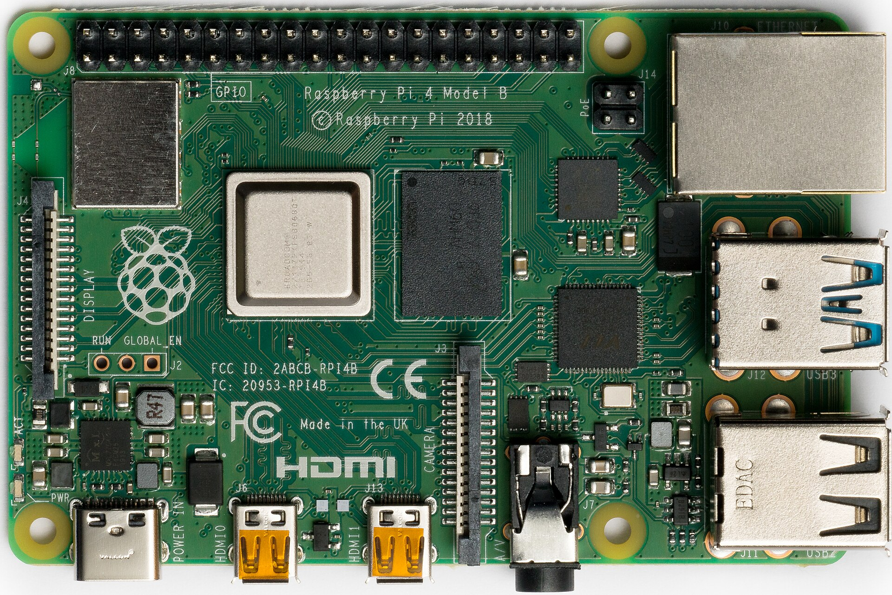
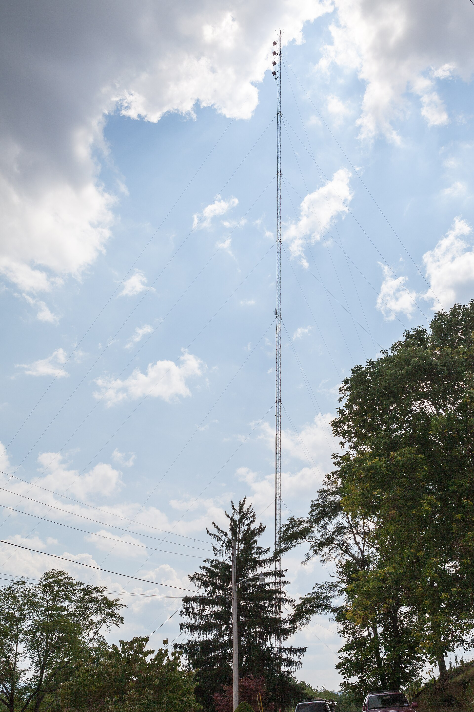

Tu repetidor, desde casa
Panel web autoalojado para MeshCore: estado, chat, mapa y gestión remota por LoRa, sin Web Bluetooth.
Ver en GitHub¿Tu repetidor es legal?
En 869,4–869,65 MHz la norma ERC 70-03 permite emitir como mucho el 10 % del tiempo. El panel lo comprueba con el airtime factor de tu firmware. Pruébalo.
Con af 9 el firmware emite como mucho un 10 %: dentro del límite.
Cómo llega

Primero lo abres donde estés.

Luego la Pi lo atiende.
El PC habla con los companion.

Y la radio llega al mástil.
Mide la batería cada quince minutos.
Aunque nadie tenga el panel abierto. Un cargador sano oscila entre 4,06 y 4,20 V.
Te avisa si la batería baja.
Por ntfy, una vez al empezar y otra al resolverse, por debajo de 3,8 V.
Bloquea los comandos peligrosos.
Nada de reset de fábrica ni de salirse de la banda. Lo arriesgado pide confirmación.
Calcula el enlace con el terreno.
Perfil de elevación entre dos nodos y la zona de Fresnel, despejada u obstruida.
Escribe en privado a tus contactos.
Conversaciones con el último mensaje y la hora. Pulsar un privado prepara la respuesta.
Lo que verás
Instálalo en una tarde
Una Raspberry Pi, un PC con Bluetooth y uno o dos companion.
- El gateway en la Pi
git clone https://github.com/odegaard12/Panel-Meshcore.git cd Panel-Meshcore && ./bridge/install-pi.sh - Panel, TLS y nginx
PANEL_PASS='tu-contraseña' ./deploy/install.sh - Tu configuración
Nombre y posición del repetidor, nombres de los companion y tus notas van en config.js, que nunca se sube al repo.
- El relay en el PC
.\install-windows.ps1 .\instalar-vigilante.ps1Con MESHCORE_ALLOWED_IPS el gateway solo atiende a ese PC.
Antes de instalar
Porque el navegador tendría que estar al lado de los companion. Aquí el PC del relay es su único dueño y el panel funciona desde cualquier sitio, móvil incluido.
No. Se gestiona por LoRa a través de un companion: estado, login y comandos.
Sí. Deja vacío el nombre del segundo y el relay ni lo busca.
En tu config.js, que está en .gitignore. Una comprobación del repo falla si encuentra IP privadas, coordenadas precisas o enlaces de invitación.
Login con bcrypt y sesión firmada de 7 días, límite de intentos, y el puerto del gateway cerrado a todo salvo tu PC.